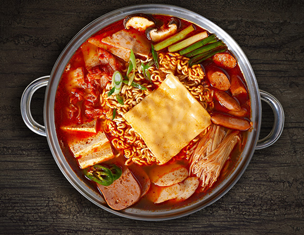

Budae Jjigae, or Army Stew

A popular dish with humble orgins
Budae Jjigae, or Korean Army stew goes back to the armistice of the Korean War. Soldiers would mix army surplus supplies such as spam, processed cheese, and hotdogs with whatever they could find locally, mostly cabbage, kimchi, rice cakes, eggs and dehydrated ramen noodles.
Ingredients
- anything on hand
- a package of spicey ramen noodles
- spam
- sliced hot dogs
- american cheese
- kimchi
- dried chili flakes
Steps
- bring a large pot or wok of water to boil over a camp stove
- place noodles and sauce packet in water
- slice spam and hotdogs and place in water
- add kimchi, whatever vegetables you may have on hand and season to taste